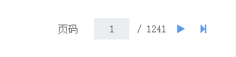

闲来没事，分享下项目中自己写的分页组件。来不及了，直接上车。
效果：



输入框可任意输入，并会自动提交到该页
依赖项：
fontawesome，bootstrap
html:

<ul class="page clearfix"> <li ng-hide="currentPage <= 1"> <a href="" ng-click="firstPage()"> <i class="fa fa-step-backward"></i> </a> <a href="" ng-click="prePage()"> <i class="fa fa-play fa-flip-horizontal"></i> </a> </li> <li> <span>页码</span> <input type="text" ng-model="currentPage">/ <span ng-bind="totalPage"></span> </li> <li ng-hide="currentPage >= totalPage"> <a href="" ng-click="nextPage()"> <i class="fa fa-play"></i> </a> <a href="" ng-click="lastPage()"> <i class="fa fa-step-forward"></i> </a> </li></ul>

css:

/* 分页 */ .page { margin: 15px 0; padding: 0; float: right; } .page li { list-style: none; float: left; height: 30px; line-height: 30px; } .page li input { padding: 3px 5px; height: 100%; width: 50px; border: none; background-color: #EAEEF1; text-align: center; margin-right: 10px; } .page li span { margin-right: 15px; } .page li a { text-decoration: none; outline: none; margin-right: 15px; }

directive:

App.directive('paging', function() { // 分页
return {
restrict: 'A',
replace: true,
scope: {
totalPage: '=totalPage',
currentPage: '=currentPage',
getData: '&getData'
},
templateUrl: 'app/views/partials/paging.html',
controller: function($scope) {
$scope.firstPage = function() { $scope.currentPage = 1; }
$scope.lastPage = function() { $scope.currentPage = $scope.totalPage; }
$scope.prePage = function() { $scope.currentPage--; }
$scope.nextPage = function() { $scope.currentPage++; }
$scope.$watch('currentPage', function(newVal, oldVal) {
if(newVal != oldVal && newVal) $scope.getData();
})
}
};
});
参数：
totalPage: 总页数, currentPage: 当前页, getData: 点击分页所触发的函数
用法：
controller：

$scope.current_page = 1; // 当前页 $scope.getData = function() { $scope.param.page = $scope.current_page; ConnectApi.start('post', 'index/student/getschoolclasslist', $scope.param).then(function(response) { // 这个ConnectApi 你大可不必关心，这是我封装的http函数 var data = ConnectApi.data({ res: response, _index: index }); $scope.data = data.data; $scope.totalpage = data.data.total_page; // 服务器端返回的总页数 } } $scope.getData(); // 获取数据的函数

html:
<div paging total-page="totalpage" current-page="current_page" get-data="getData()"></div>